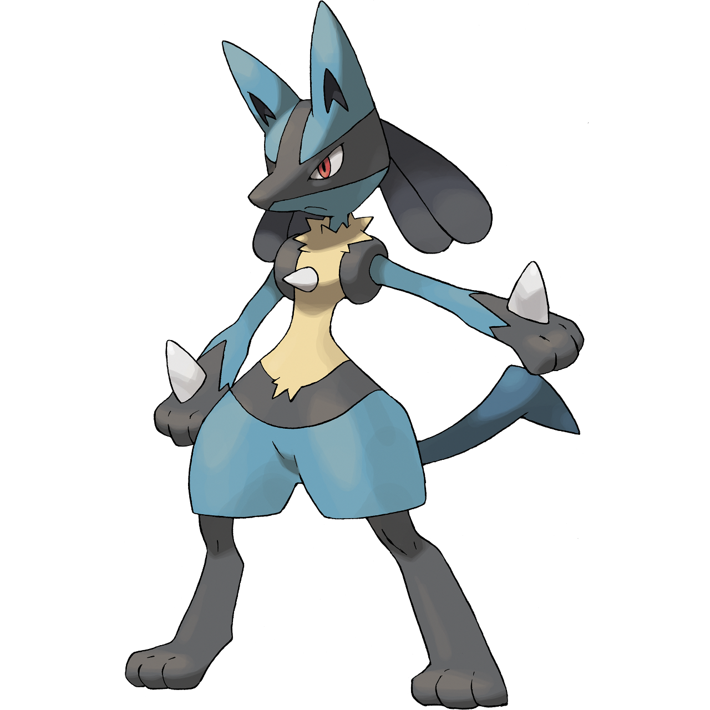
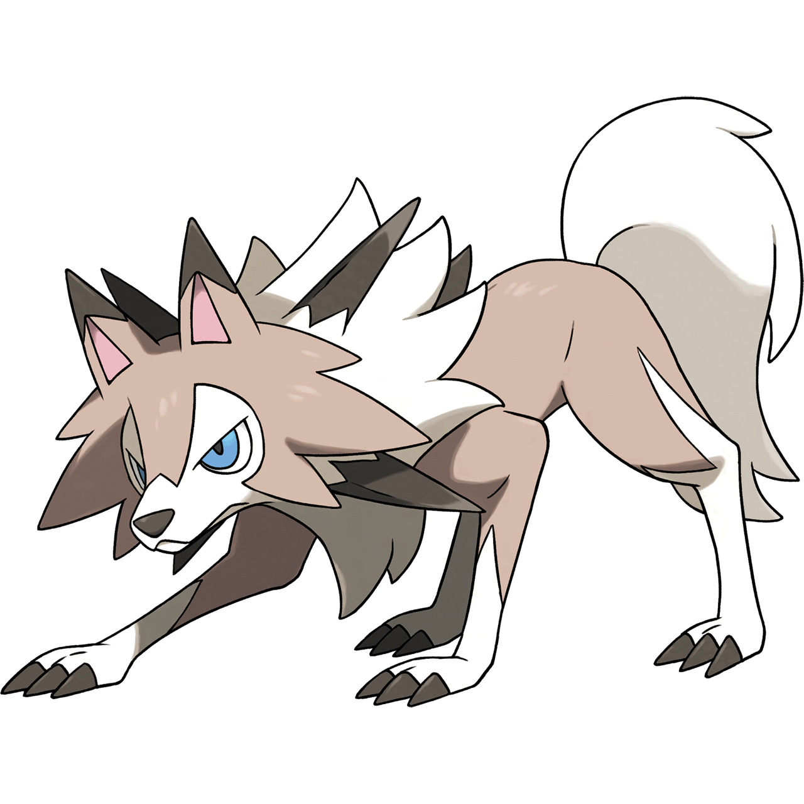

Sitemap

Layout 1

Layout 2

Layout 3

Layout 4

Layout 5

Layout 6

Layout 7

Layout 8

Layout 9

Layout 10

Layout 11

Layout 12

Pictures

Grovyle is a Grass type Pokémon introduced in Generation 3. It is known as the Wood Gecko Pokémon. The leaves growing out of Grovyle’s body are convenient for camouflaging it from enemies in the forest. This Pokémon is a master at climbing trees in jungles.

Litten is a Fire type Pokémon introduced in Generation 7. It is known as the Fire Cat Pokémon. The cool-headed Fire Cat Pokémon, Litten, is the next choice for a first-partner Pokémon. Litten's fur is rich in oils and is immensely flammable. It constantly grooms itself by licking its coat, collecting loose fur into balls. It then ignites these hairballs to create fireball attacks. When the time comes for Litten to molt, it burns off all of its fur in one glorious blaze. Litten starts with the move Ember. If you try too hard to get close to it, it won’t open up to you. Even if you do grow close, giving it too much affection is still a no-no.
Lucario is a Fighting/Steel type Pokémon introduced in Generation 4. It is known as the Aura Pokémon. Lucario has a Mega Evolution, available from X & Y onwards. Lucario reads its opponent’s feelings with its aura waves. It finds out things it would rather not know, so it gets stressed out easily.
Lycanroc is a Rock type Pokémon introduced in Generation 7. It is known as the Wolf Pokémon.
Midday Form: Its quick movements confuse its enemies. Well equipped with claws and fangs, it also uses the sharp rocks in its mane as weapons.
Midnight Form: It has no problem ignoring orders it doesn’t like. It doesn’t seem to mind getting hurt at all—as long as it can finish off its opponent.
Dusk Form: Bathed in the setting sun of evening, Lycanroc has undergone a special kind of evolution. An intense fighting spirit underlies its calmness.

Mimikyu lives its life completely covered by its cloth and is always hidden. People believe that anybody who sees its true form beneath the cloth will be stricken with a mysterious illness. People in the Alola region are convinced that you must never try to peek beneath its covering. Mimikyu's health fails when it’s bathed in the rays of the sun, so it prefers to stick to dark places. It’s rumored that the reason it covers itself with a cloth is to avoid sunlight.

Pikachu is an Electric type Pokémon introduced in Generation 1. It is known as the Mouse Pokémon. This POKéMON has electricity-storing pouches on its cheeks. These appear to become electrically charged during the night while PIKACHU sleeps. It occasionally discharges electricity when it is dozy after waking up.

Tapu Koko is an Electric/Fairy type Pokémon introduced in Generation 7. It is known as the Land Spirit Pokémon. Tapu Koko is a special Pokémon that protects the area where it lives. It's called the guardian deity of Melemele Island, one of the islands of the Alola region. Although it's known as a guardian deity, it's a surprisingly fickle Pokémon, and will not necessarily come to your aid if you need help. Despite that, Tapu Koko has a strong sense of curiosity. If it becomes interested in a person or in other Pokémon, it may come to play or battle with them.

Zeraora is an Electric type Pokémon introduced in Generation 7. It is known as the Thunderclap Pokémon. Zeraora is mythical Pokémon introduced in Pokémon Ultra Sun & Ultra Moon. This Pokémon creates a powerful magnetic field by emitting strong electric currents from the pads on its hands and feet. Unlike most Electric-type Pokémon, Zeraora doesn’t have an organ within its body that can produce electricity. However, it is able to gather and store electricity from outside sources, then use it as its own electric energy.

Zorua is a Dark type Pokémon introduced in Generation 5. It is known as the Tricky Fox Pokémon. To protect themselves from danger, they hide their true identities by transforming into people and Pokémon.